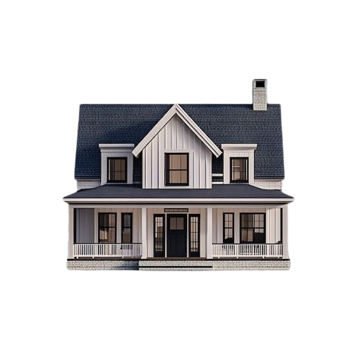
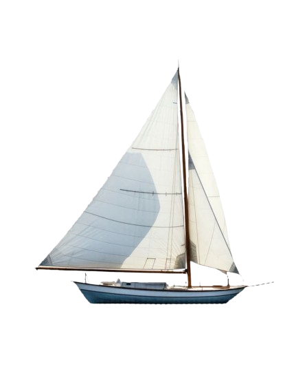
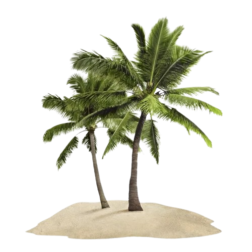

o plano do dia
Itinerário
Toca em cada momento para abrir os detalhes.

13:00 — Saímos de casa
~14:15 — Chegada à Marina de Peniche
Cais da Ribeira
Temos que procurar três casas no topo de uma plataforma de madeira. É aqui que se situam os escritórios da "Feeling Berlenga", com quem vamos fazer as nossas atividades do dia. Os funcionários da Feeling Berlenga estarão a usar uma t-shirt azul-clara ou uma camisola azul-escura. Temos que estar lá às 14:15, mas só vamos começar às 14:45.

14:45 — Partida do barco
Rumo às Berlengas !!
Vamos fazer uma viagem de barco até às Berlengas em Peniche. Se quiseres saber mais, continua a ler — lá em baixo deixei algumas fotos e factos sobre as Berlengas.

Na ilha — Praia do Carreiro do Mosteiro
Banhos, sol e água cristalina
O plano principal é mesmo este: mergulhar naquela água azul-turquesa e não fazer mais nada além de existir ao sol.
~18:45 — Regresso a Peniche
De volta ao continente
Passeio em Peniche
Pela praia — se der tempo
Um passeio calmo pela praia, se ainda houver tempo antes do jantar.
19:30 / 20:00 — Jantar
Restaurante Profresco, Peniche
Jantar tranquilo no Profresco, para fechar o dia com boa comida e ainda melhor companhia.
Depois do jantar — regresso a casa
Fim do dia perfeito
De carro até casa, provavelmente cansados, cheirando a sal e felizes.